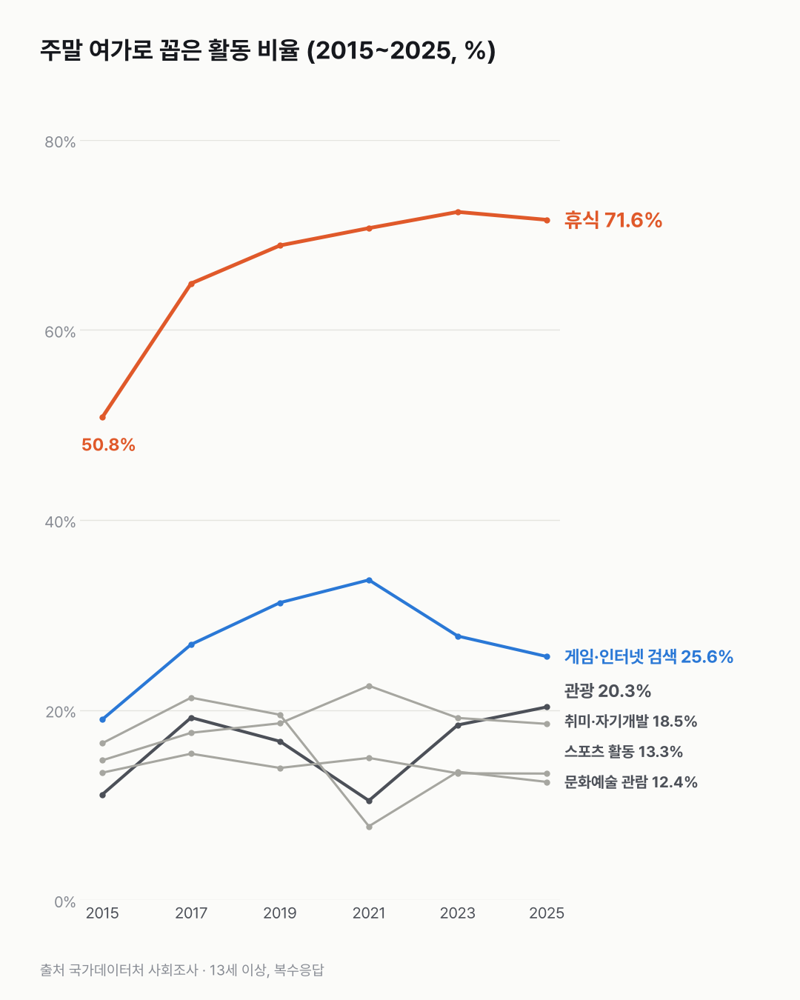
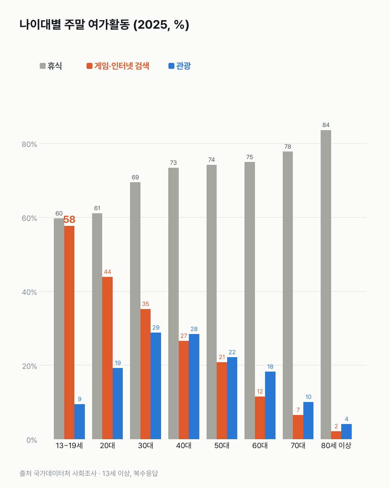

주말엔 그냥 쉰다는 사람, 10년 새 크게 늘었어요
주말은 영상 보기와 쉬기가 중심이에요. 쉰다는 사람은 10년 새 크게 늘었어요.

- 주말 여가로 '휴식'을 꼽은 사람이 2015년 50.8%에서 2025년 71.6%로 늘었어요.
- 관광을 꼽은 사람도 11.1%에서 20.3%로 늘었어요.
- 가장 많이 꼽는 건 여전히 동영상 보기예요. 2021년 83.0%에서 2025년 75.6%가 됐어요.
토요일 아침, 알람 없이 늦게 일어나요. 딱히 계획은 없어요. 이 조사에선 이런 주말도 '휴식'으로 답할 수 있어요. 무엇을 하며 쉬는지는 묻지 않거든요. '휴식'을 꼽은 사람은 2017년 64.9%, 2019년 68.9%로 조사 때마다 늘다가, 2023년(72.4%)부터는 비슷해요.
관광은 2021년(10.5%)에 떨어졌다가 다시 올라 20.3%가 됐어요. 게임·인터넷 검색은 2021년 33.7%가 가장 높았고, 2025년엔 25.6%예요.
가장 많이 꼽는 건 여전히 동영상 콘텐츠 시청이에요. 2021년 83.0%에서 2025년 75.6%로 줄었는데도 1위예요.
나이대로 보면 꽤 달라요. 2025년 13~19세는 게임·인터넷 검색이 57.7%로 휴식(59.7%)과 거의 붙어 있어요. 관광은 30대(28.8%)와 40대(28.4%)가 가장 많이 꼽았어요. 휴식은 나이가 많을수록 높아서 80세 이상은 83.6%예요. 사회활동은 70대가 23.0%로 가장 높아요.


쉰다는 답이 늘어난 만큼 주말이 느긋해진 건지, 다른 걸 할 여유가 줄어든 건지는 이 문항으로 알 수 없었어요.
이 숫자는 어디서 왔나요
출처
기준일 2015~2025년 홀수 해 조사예요.
국가데이터처사회조사
- 주말(휴일포함)의 여가활용(복수응답, 13세 이상 인구)KOSIS DT_1SSCL082R원본 보기
활동 11가지를 꼽은 비율, 성별·나이대, 2년 주기 2015~2025년
어떻게 셌나요
- 13세 이상에게 주말에 주로 무엇을 하는지 물은 조사예요. 2년마다 해요.
- 복수응답이라 여러 활동을 고를 수 있어요. 그래서 비율을 다 더하면 100%를 넘어요.
- 2021년에 'TV시청'이 '동영상 콘텐츠 시청'으로 바뀌었어요. 범위가 넓어진 것으로 보여 이 항목은 2021~2025년 안에서만 비교했어요. '사회 및 기타활동' → '사회활동'도 같은 해 바뀌었어요.
- 2009~2013년은 항목이 다른 별도 표라 2015년부터 썼어요.
한계 5가지
이 데이터로 말할 수 없는 것
- '휴식'의 범위가 넓어요. 무엇을 하며 쉬는지는 이 문항으로 알 수 없어요.
- 이름이 바뀐 항목은 2021년 전과 잇지 않았어요. 'TV시청'(2019년 69.7%)과 '동영상 콘텐츠 시청'(2021년 83.0%)은 다른 질문으로 봐야 해요.
- 2021년은 코로나 시기예요. 관광·문화예술 관람이 그해 낮은 데에는 그 영향이 섞였을 수 있어요.
- 복수응답이라 항목끼리 더하면 안 돼요.
- 원인은 말하지 않아요.
계산 기록
처음 던진 질문
주말엔 주로 뭐 하세요? 사람들이 주말·휴일에 하는 일이 2015년부터 2025년까지 어떻게 늘고 줄었는지, 나이대별로는 어떻게 다른지 봤어요.
수집·검증 기록
- 표: KOSIS DT_1SSCL082R. 수집일 2026-10-29 (KOSIS 오픈API).
- 신뢰도 낮음(*) 표시 칸 없음.
- 교차 확인: 보도에서 같은 수치를 찾지 못함. KOSIS 표 값만 근거로 씀.
새 글 나오면 받아 보기
피드 리더 앱에 이 사이트 주소를 한 번 넣어 두면, 새 글이 올라올 때 앱에 떠요. 가입이나 메일 주소는 필요 없어요.
받는 법 보기
- 피드 리더 앱을 하나 골라요. 새 글을 모아 보여 주는 앱이에요. 예를 들면 Feedly나 Inoreader가 있어요. 둘 다 무료고 웹·휴대폰에서 써요.
- 앱에서 '구독 추가'(+)를 누르고 아래 주소를 붙여 넣어요.
- 끝이에요. 새 글이 올라오면 앱 목록에 떠요.
https://protofu.github.io/opendata-insight/feed.xmlFeedly를 쓴다면 여기를 눌러 바로 추가할 수도 있어요.